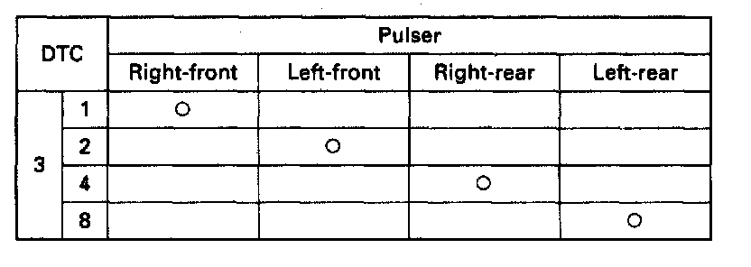

DTC 3-8

Pulser/Different Diameter Tire
Diagnostic Trouble Code (DTC) 3-1 to 3-8: Pulser Diagnosis
The ABS control unit monitors the wheel sensor signals during the regular diagnosis (during driving). It turns the ABS indicator light on if it detects a periodic change in the wheel sensor signal of each wheel caused by a chipped pulser gear, etc.
Possible causes:
- Chipped pulser gear
- Improperly installed wheel sensor